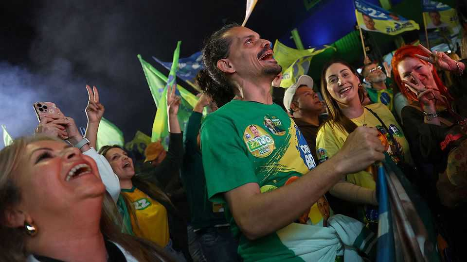

Brazil is a right-wing country now
The Bolsonaro clan promises to align with Donald Trump, and to attack democratic institutions

Oct 8th 2026
FOR MOST of the past quarter of a century Brazil was dominated by the Workers’ Party (PT). A left-wing alliance of trade-unionists, progressive Catholics and academics built a large welfare state and defined Latin America’s version of social democracy. That era is over. On October 4th the PT and its ageing leader, Luiz Inácio Lula da Silva, known as Lula, were trounced in the first round of Brazil’s general election by Flávio Bolsonaro and his Liberal Party (PL).
Betting markets give Flávio a strong chance of winning the run-off on October 25th. It is an astounding result for the scion of a right-wing dynasty whose patriarch, Jair, an ex-president, is under house arrest for an attempted coup. Only last year Jair was barred from office until 2060. His son has alleged connections to the criminal underworld. Despite that, Flávio narrowly fell short of winning outright.
Even if Flávio unexpectedly fails, the election is a triumph for Brazil’s MAGA-adjacent right—the latest in a wave of successes for right-wing parties in Latin America. The PL now has the most powerful congressional caucus since Brazil’s constitution was enacted in 1988. It is also the largest party in the three biggest states, São Paulo, Rio de Janeiro and Minas Gerais, which together generate more than half of Brazilian GDP.
The Bolsonaro clan is ecstatic. Jair’s ardently evangelical wife, two of his other sons and his brother all won seats in Congress. From February, when newly elected senators take their seats, the PL and allies will control the Senate and thus can rewrite laws. Expect them to boost business and to weaken protections for the environment. Some outsiders will warn against allowing more damage to the Amazon rainforest. Other outsiders, including America, will crave the opportunity to tap Brazil’s huge deposits of critical minerals, vital resources whose global supply is otherwise controlled largely by China.
This congressional strength means the PL has a rare opportunity to fix Brazil’s ruinous public finances. Rewriting the laws which impose high and growing levels of government spending would curb borrowing, bring down interest rates and prompt investment—boosting growth. It gives the Bolsonaros scope to create a glittering economic future for Brazil.
That would mean forgoing spending today, something for which the Bolsonaros have little appetite. The likelier outcome will be more polarised politics and pressure on Brazil’s vulnerable democratic institutions. The victors will exult in MAGA-style culture clashes. Two right-wing congressmen, Nikolas Ferreira and Lucas Pavanato, drew more votes than any candidates in Brazilian history; both are young social-media influencers who hate wokery as much as they love guns and God.
The Bolsonaros will seek vengeance. Flávio’s big campaign promise was to free his father. Many candidates for the Senate vowed to bring down the Supreme Court justices (some caught up in corruption scandals) who prosecuted Jair. “We don’t just want impeachment,” said Bia Kicis, a new PL senator, “we want removal, investigation and imprisonment.”
A Senate majority is needed in order to impeach a Supreme Court justice. A stand-off between the two powerful institutions could trigger a constitutional crisis. Justices who believe themselves to be defending democracy will deploy their extensive powers in order to remain in office. An emboldened Congress will attack the court. Whoever is the president will play a decisive role, not least because in the coming years he will probably get to replace four of the Supreme Court’s 11 justices.
However that fight ends, the outcome for Brazil is likely to be new grievances and deepening public cynicism. Brazilians have good reasons to reject the PT for its dead-end policies, its own corruption and the lack of fresh leadership. But they also have every reason to fear where that rejection now leads. ■